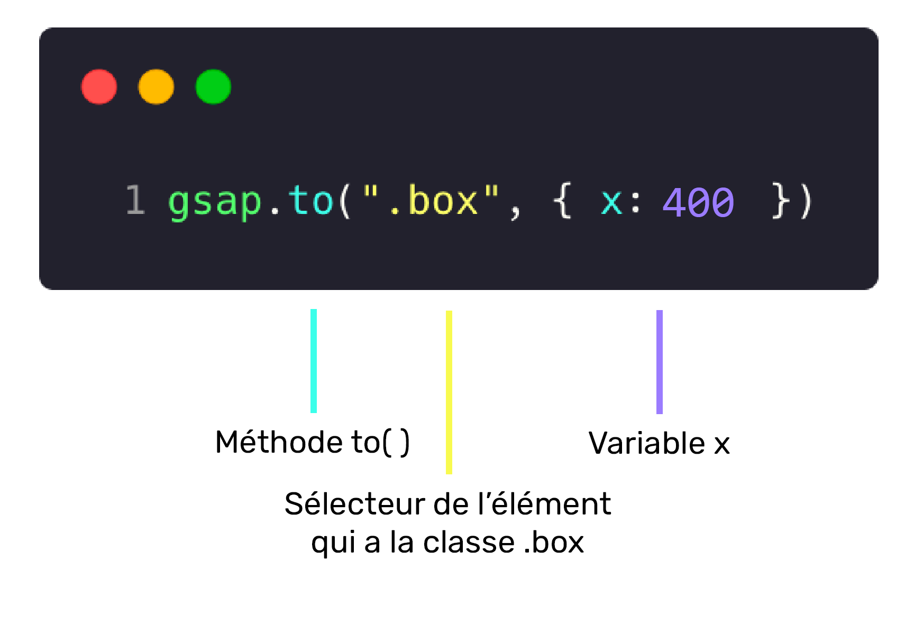

L'objet JavaScript GSAP est le point de départ de toutes les fonctionnalités associées à GSAP.
- Création d'animations
- Configuration de paramètres
- Ajout de plugiciels (plugins), d'interpolations (eases) ou d'effets
- Contrôle des animations
Les interpolations, ou en anglais: tweenings, permettent de créer des animations similaires à celles réalisées en CSS.
Pour ce faire, il suffit de spécifier:
- Le ou les éléments à animer avec un sélecteur, ex:
.element - Un objet indiquant la ou les propriétés à animer et les valeurs souhaitées,
ex:{ opacity: 0.5 }
font-size
deviendrait fontSize.Bien qu’il soit possible d’animer presque toutes les propriétés CSS, il est préférable de se concentrer sur
transform et opacity lorsque possible, puisque ces propriétés bénéficies
d’une accélération matérielle.
opacityxetyrotation,rotationXourotationYscale,scaleXouscaleYskewXetskewY
Dans l'exemple ci-dessous, un carré est positionné en haut à gauche de son parent. En cliquant sur le bouton ▶️, une animation GSAP le déplace vers la droite.
See the Pen GSAP - to() by TIM Montmorency (@tim-momo) on CodePen.
400, sont
interprétées comme étant des px. Les valeurs entre guillemets, ex '400%', peuvent spécifier une unité
de mesure différente, comme dans le cas précédent où un pourcentage a été utilisé (%).Décortiquons l'animation:
-
gsapindique que nous désirons utiliser une méthode appartenant à la librairie GSAP. -
to()correspond à la méthode utilisée. Traduisible par "vers", cette méthode indique qu'un état de fin sera passé et que l'élément doit faire une interpolation vers celui-ci. -
'.element'le sélecteur correspondant à l'élément devant être animé. -
{ x: '400%' }un état de fin sous forme d'objet contenant une propriété (x) et une valeur ('400%').
L'élément se déplace donc vers la droite ➡️ de 4x sa largeur (400%) en l'espace d'une seconde.

to() indique un état de fin à atteindre
et que l'animation a changé les valeurs des propriétés, leurs valeurs de départ est maintenant identiques à celle de
fin, donc aucune animation n’est exécutée les fois subséquentes.See the Pen GSAP - to() by TIM Montmorency (@tim-momo) on CodePen.
Décortiquons une animation avec plus d'une propriété:
-
from()correspond à la méthode utilisée. Traduisible par "à partir de", cette méthode indique qu'un état de départ sera passé et que l'élément doit partir de celui-ci pour faire une interpolation vers ses valeurs initiales. -
{ x: '400%', opacity: 0 }un état de départ sous forme d'objet contenant les propriétésx&opacityet les valeurs400%&0(transparent au début de l'animation).
transform: translateX(400%) est formulé ici x: '400%'. Pour voir tous les noms associés à
la propriété transform, voir la liste
de Greensock 🟩 🧦.
to(), l’animation from() peut-être jouée plus d’une
fois, puisque l’état de départ fourni ne correspond jamais à celle de fin.Permets de spécifier un état de départ et de fin d'une animation, contrairement à from() et to() qui utilisent l'état actuel comme point de départ ou fin. Cette interpolation permet d'avoir un contrôle total sur une animation, en particulier lorsqu'elle est enchaînée avec d'autres animations.
See the Pen GSAP - from() by TIM Montmorency (@tim-momo) on CodePen.
Dans cet exemple, il est important de remarquer la présence de deux objets de
propriétés { x: '0%' } et { x: '400%' } plutôt qu'un seul. Le premier
spécifie l'état de départ et le deuxième l'état de fin de l'animation.
Il est possible d'omettre une propriété CSS dans l'état de départ et de la spécifier uniquement dans l'état de fin.
Par exemple: { x: '0%' }, { x: '400%', scale: 2 } fonctionnerait, puisque GSAP assumerait que
le scale de départ correspond au scale naturel de l'élément (1) et donc
l'animerait jusqu'à 2.
Cependant, spécifier uniquement une propriété dans l'état de départ ne génèrera pas d'animation sur cette dite propriété.
Par exemple { x: '0%', scale: 2 }, { x: '400%' } scale donnerait un scale
initial de 2 et puisqu'aucun scale de fin n'est spécifié, GSAP assumera que le scale de fin doit correspondre au
scale de départ.
En plus des propriétés CSS de base, il est possible d'utiliser des propriétés spéciales.
Tout comme la propriété animation-duration en CSS, la propriété duration de
GSAP permet de spécifier la durée d'une animation.
See the Pen GSAP - fromTo() by TIM Montmorency (@tim-momo) on CodePen.
Tout comme la propriété animation-iteration-count en CSS, la
propriété repeat de GSAP permet de spécifier le nombre de fois qu'une animation
doit-être effectué.
See the Pen GSAP - Duration by TIM Montmorency (@tim-momo) on CodePen.
infinite pour indiquer qu’une animation doit jouer à l’infinie,
GSAP s’attend à recevoir -1, comme pour le dernier carré du précédent exemple.Yoyo
De façon similaire à animation-direction: alternate; en
CSS, la propriété Yoyo de GSAP permet d'indiquer à une animation d'alterner de direction à
chaque répétition.
Tout comme la propriété animation-delay en CSS, la propriété delay de GSAP
permet de spécifier un délai d'attente avant de démarrer une animation.
See the Pen GSAP - Delay by TIM Montmorency (@tim-momo) on CodePen.
Similaire à Delay, Stagger fait en sorte qu'un groupe d'éléments (.element) ayant tous la même animation soient décalés. Ainsi, plutôt que de voir les trois carrés se déplacer en même temps, un délai de 0.2s est ajouté entre chaque animation.
Il est aussi possible de passer un objet à stagger plutôt qu'un nombre. Dans cet objet, il est
possible de spécifier le décalage entre chaque élément.
Par exemple:
gsap.from('.element', {
x: '400%',
stagger: {
each: 0.2
}
});Générerait exactement le même résultat que dans l'exemple précédent. Cependant, il est possible de passer des
propriétés et valeurs supplémentaires afin de raffiner l'animation. Notamment, from, soit le point
de départ de l'animation.
-
"start"part du début vers la fin (par défaut) -
"end"part de la fin vers le début -
"center"du centre vers les extrémités -
"edges"des extrémités vers le centre -
"random"de façon aléatoire
Ease
Permets de dicter le rythme de l'animation, de la même façon que la animation-timing-function permet de le faire pour les animations/transitions CSS.
Valeurs possibles:
none, power1, power2, power3, power4,
back, elastic, bounce, rough, slow,
steps, circ, expo, sine
Il est possible de spécifier si un ease doit être effectué au début, à la fin ou au début et à
la fin en ajoutant .in, .out ou .inOut après le nom
du ease souhaité. Par exemple: bounce.inOut;
Si aucune spécification n'est donnée, .out sera utilisé.
Callbacks
Les Callbacks permettent de déclencher une fonction JavaScript à différents moments clés
d'une animation.
Par exemple, pour se synchroniser avec son début 🏁, il est possible d'utiliser onStart ou
encore, avec sa fin 🔚 avec onComplete, comme dans l'exemple ci-dessous.